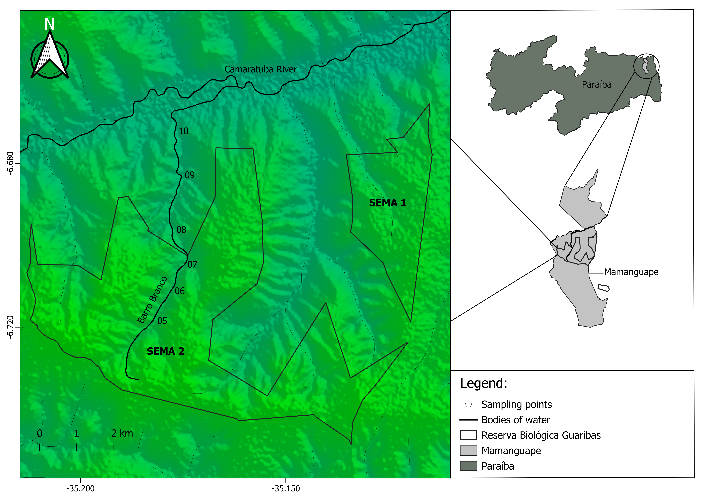
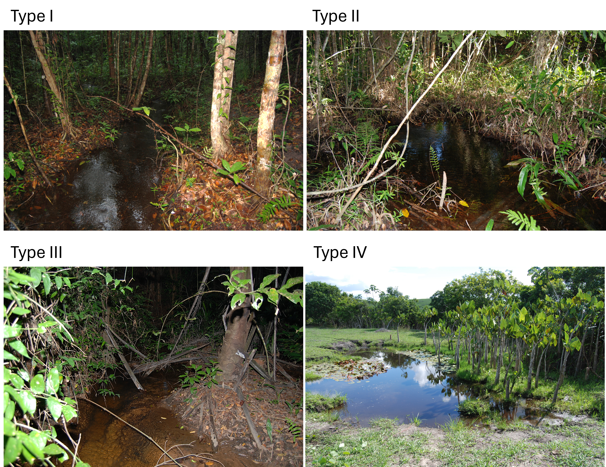
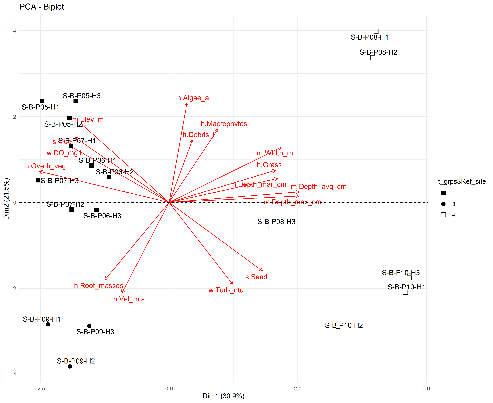

Physiological biomarkers of stream fish from the Atlantic Forest within a Conservation Unit and its surroundings
Physiological biomarkers of fish as predictors of habitat quality in an Atlantic Forest stream Linking fish physiological biomarkers to habitat integrity in an Atlantic Forest Stream
Authors
Affiliations
Adamastor Coutinho Pinto
Programa de Pós-Graduação em Ecologia e Conservação (PPGEC), Universidade Estadual da Paraíba - Campus I, Rua Baraúnas, 351, Bairro Bodocongó, CEP 58109-753, Campina Grande, PB, Brazil.
Mayara Mirelly da Silva Monteiro
Grupo de Ecologia de Rios do Semiárido, Laboratório de Ecologia, Departamento de Ciências Biológicas, Universidade Estadual da Paraíba – UEPB, Campus V, Rua Horácio Trajano de Oliveira, 666, Cristo, CEP 58071-470, João Pessoa, PB, Brazil.
Alice da Silva Barros
Programa de Pós-Graduação em Ecologia e Conservação (PPGEC), Universidade Estadual da Paraíba - Campus I, Rua Baraúnas, 351, Bairro Bodocongó, CEP 58109-753, Campina Grande, PB, Brazil.
Larissa Rafaela Caetano da Silva
Laboratório de Ecofisiologia Animal (LEFA), Departamento de Ciências Biológicas, Universidade Estadual da Paraíba – UEPB, Campus V, Rua Horácio Trajano de Oliveira, 666, Cristo, CEP 58071-470, João Pessoa, PB, Brazil.
Enelise Marcelle Amado
Laboratório de Ecofisiologia Animal (LEFA), Departamento de Ciências Biológicas, Universidade Estadual da Paraíba – UEPB, Campus V, Rua Horácio Trajano de Oliveira, 666, Cristo, CEP 58071-470, João Pessoa, PB, Brazil.
Elvio Sergio Figueredo Medeiros
Grupo de Ecologia de Rios do Semiárido, Laboratório de Ecologia, Departamento de Ciências Biológicas, Universidade Estadual da Paraíba – UEPB, Campus V, Rua Horácio Trajano de Oliveira, 666, Cristo, CEP 58071-470, João Pessoa, PB, Brazil.
Published
March 24, 2026
Abstract
The Atlantic Forest is one of the most degraded biogeographical provinces of Brazil, and the creation of Conservative Unities is one of the main methods to reduce biodiversity loss in its extension. The project described here aims to compare the environmental conditions of streams, utilizing ecophysiological parameters that can indicate the presence of pollutants. For that, abiotic data and fish of a single genera (Hemigrammus) were collected inside the Guaribas Biological Reserve (Paraíba, Brazil) and outside it, subjected to different human interference. From the collected specimens, physiological markers were used as uniformity parameters for the distinct relationships between the fish from the study, being the quantification of total plasmatic proteins, moisture content of tissues, and the activity of MXR phenotype. Although the last one had inconclusive results, all of the parameters statistically demonstrated the existence of differences between the two groups and a more pronounced uniformity between the sites within the reserve. Combining this with the fact that fish from outside the reserve had a higher concentration of plasmatic proteins and also higher amounts of ammonia in the water of these sites, it was possible to argue that the conclusions regarding the effectiveness of the Conservative Unity were highly positive.
Keywords
Ecological Health, Physiological Stress
1 Introduction
The devastation of rivers and streams from the Atlantic forest, biogeographical province (Udvardy, 1975) included in the list of the world’s Hotspots (high biodiversity rates, endemism and anthropic pressure - (Myers et al., 2000), is caused mainly by pollution, deforestation, damming and introduction of exotic species. Pollution decreases abundance and richness of local fish, being aggravated by loss of riparian vegetation when there is deforestation or change of river course due to damming. These population reductions are also caused in the presence of invasive species, introduced accidentally or intentionally by humans, modifying the original competition/prey relation (Miranda, 2012). With about 2-5% of the original vegetation preserved in Atlantic forest, one of the main strategies for conserving and preserving biodiversity from this and other biogeographical provinces is the delimitation of areas known as Conservative Units (CU), regulated in Brazil by the National System of Conservative Unit (SNUC) and implemented by Chico Mendes Institute (ICMBio) to be managed at federal, state and local levels (Arruda et al., 2013; Miranda, 2012).
Ecological data, such as richness and species abundance, are the most studied and represent how aquatic animals deal with general pollution, but the toxicity responsible for behavioral change depends on the organism, time of exposure and particle type, which demonstrates the need for physiological studies, specially in natural environments (Amoatey & Baawain, 2019). As physiological, morphological and behavioural aspects represent how their functions are performed in the ecosystem, they are nominated functional characteristics, commonly studied by parameters of strength and resilience. Changes on these parameters reflect environmental changes that could not be seen by parameters of taxonomical diversity, which happens when different species possess similar functions, highlighting how these, still scarce studies, can be promising (Júnior, 2021). Taking it into account, as also the relevance of Conservation Units for the Atlantic forest species, this study brings up the possibility to compare the ecological health from these waterbodies by identifying physiological stress markers from the fish within and near CU’s.
One of the main physiological functions affected by pollutants (such as pesticides, heavy metals, drugs and microplastics) is the osmoregulation one, that, as well as the pH control, is predominantly done by gills. Being also critical to gas exchange, ionic regulation and nitrogen excretion, its functions are partially performed by hormonal control of blood flow (carried out by catecholamines, which reduce vascular resistance in the gills and increase blood flow in the efferent artery via beta and alpha-adrenoreceptors, in that order) and mainly by the transport of ions, probably made in the chloride cells from the filament epithelium, that possess transport enzymes called sodium/potassium-dependent ATPases (Evans, 1987).
The action of toxic compounds in the gills leads to a series of histopathologies in response to stress, such as necrosis and epithelial desquamation, frequently generated by flaws in cellular osmoregulation due to ATPase inhibition and physiological failure of the chloride cells or gills as a whole. The effects of this action on the organism can be measured through a few blood markers, mainly lower levels of Chlorine and Sodium ions, obtained by freshwater fish through exchange with internal ions (Evans, 1987), and higher levels of plasmatic proteins (Sabae & Mohamed, 2015). The hydration level of gills and muscles is another physiological parameter tied to the animal’s capacity of dealing with salinity variation, and, for that, suffers mensurable effects from the action of toxic compounds in the environment. This active control parameter was suggested by Ayrapetyan (2012) as a universal biomarker for detecting pollution in the environment, being upheld by David et al. (2018) in a study with osmoconforming and euryhaline oysters under effect of different - but common - levels of salinity, and, more discretely, by Sabae & Mohamed (2015) in a study with freshwater fish.
Another relevant biomarker is the abnormal activity of the multixenobiotic resistance (MXR) phenotype, an innate gene of many aquatic species that is expressed in organs such as gills, kidneys, blood-brain barrier, liver and pancreas. It is activated by exposure to pollutants and results in the production of P-glycoproteins (Pgp) in the membrane, which act to remove endogenous or exogenous toxic compounds out of the cell, protecting DNA and inducing its excretion. Although the MXR activity explains how some species are more resistant to the presence of pollutants, some substances can reverse its effectiveness, being called chemosensitizers (or simply MXR-inhibitors). Those compounds can cancel the Pgp activity, alter the mechanism regulation, saturate or even reverse MXR activity, acting, in this case, by saturating the Pgp pump and allowing other xenobiotics to enter the cell and increase its toxicity, even if the chemosensitizers themselves are not toxic. Precisely because they are mostly organic, natural, primarily harmless and very present in the materials emitted anthropogenic in nature, its detection should also be a priority in environmental risk studies (Smital & Kurelec, 1998).
The hypothesis of markers linked to physiological stress of fish providing evidence of the environmental stress levels occurring inside and outside of a Conservation Unity was tested in the Guaribas Environmental Reserve (ReBio Guaribas), one of the 22 CU’s inside the Atlantic forest area of Paraíba state, located in the Zona da Mata, wettest and most economically relevant mesoregion from the state (Figure 1). Grouped, according to SNUC, as one of the integral protection areas (aimed to conserve biodiversity, being minority within the biogeographical province – 33,45% of the CU’s), the definition of environmental reserves prohibits human interference inside their limits, except for management actions that aim its preservation and recovery. Despite being one of the most restricted types of Conservation Units, there are 22 populations that influence ReBio Guaribas due to historic factors of occupation and absence of an effective buffer zone around the three areas that make up the reserve. Those populations are mainly rural and cause direct impact, by using wood and plants from the reserve, and indirect, causing siltation of rivers and contaminating groundwater through the use of septic tanks and releasing agricultural chemicals into the soil, promoting possible comparable ecophysiological responses in the ichthyofauna inside and around the CU (Arruda et al., 2013; Ministério do Meio Ambiente, 2025).
The ecophysiological evaluation of human impact on the forest, which is close to areas of monoculture and natural vegetation modified for livestock, was mainly guided by the fish species inventory of ReBio Guaribas made by Gouveia et al. (2017), in a study that lists 18 species from five different orders: Characiformes (12 species), Perciformes (3 species), Synbranchiformes (1 species), Siluriformes (1 species) e Cyprinodontiformes (1 species). From those, two are exotic - Oreochromis niloticus, second most farmed fish species in the world and tolerant to osmotic variation, and Poecilia reticulata, largely used in mosquito control and resistant to stressful environments (Miranda, 2012) - and none are listed as threatened. The predominance of small fish inhabiting small basins explains the higher level of endemism in streams, resulting from the allopatric speciation generated by the low dispersion made by these fish and the consequent isolation of populations (Gouveia et al., 2017). Having in mind that these stream fish are phylogenetic close, this paper offers representative data for the entire local ichthyofauna using species of Hemigrammus genus, of the Characiformes order, characterized by a black conspicuous spot delimited on the dorsal fin. Its type species, Hemigrammus unilineatus, has a compressed and slightly elongated body and exhibits wide geographical distribution both in Central and South America, with registers in other Brazilian states, such as Alagoas and Pernambuco (Serra, 2010).
The identification of physiological stress biomarkers in the collected fish aims to evaluate the ecological health of sites inside and surrounding the CU, through quantitative comparison of the influence of anthropogenic action with data from a legally protected area (statistical analysis made in the integrated programming environment R and R Studio - (R Core Team, 2017; RStudio Team, n.d.). This promotes a more tangible insight in contrast with other scientific papers that only make qualitative assessments of Conservative Units, and also using more specific markers than articles that only explore the ecological consequences of pollution exposure.
2 Material and Methods
Study area and sampling design. This study was conducted in the Guaribas Biological Reserve (REBIO Guaribas), in northeastern Brazil, a protected area created in 1990 to preserve one of the last remnants of the Atlantic Forest (Brasil, 2000; MMA, n.d.). The reserve is located in the municipality of Mamanguape, state of Paraíba, in a heterogeneous landscape influenced by the adjacent Caatinga and Cerrado biomes. The regional climate is classified as As’ (Köppen & Geiger, 1928), characterized by a rainy season from February to July and a dry period from October to December (Peel et al., 2007). The average annual temperature varies from 24 to 26 °C, while the annual rainfall varies between 1,750 and 2,000 mm. The hydrographic network is composed of small streams fed by rain, notably the Barro Branco stream, a tributary of the Camaratuba River, where this study was carried out. These systems are influenced by riparian vegetation; however, parts of the buffer zone exhibit different levels of anthropogenic disturbance (Gouveia et al., 2017). The surrounding landscape is predominantly agricultural, including sugarcane and coconut plantations, livestock farming, and small orchards. These land uses can act as sources of diffuse pollution, especially through pesticide runoff and domestic effluents, creating a spatial gradient of environmental disturbance (MMA, n.d.; Soler, 2004). Sampling was conducted along the Barro Branco stream, comprising six sampling sites, and at each site, three subsamples were collected between November 2023 and February 2024. The sampling sites were distributed longitudinally to capture environmental variability and gradients of human influence. Sites P1 to P3 were located within the reserve, where more preserved conditions were expected, while sites P4 to P6 were situated in the buffer zone or in adjacent areas with greater human influence (Figure 1). This design aimed to include different levels of habitat integrity, riparian condition, and water quality.
For the sake of comparison, we classified all sites into four categories defined a priori (Figure 2). Reference site or Type I site, which are the sites that occur within the conservation unit and are well preserved, with intact riparian forest and no crop fields nearby (at least 1 km distant), free flowing water (≥ 0.25 m/s), high dissolved oxygen concentration (≥ 6 mg/L) and temperature below 28 °C. Type II sites, are those that occur within the conservation unit, but are not well preserved, failing in one or more of the water quality criteria and/or having its riparian vegetation removed or managed. Type III sites are those outside the conservation unit but meet the water quality criteria for a type I site, and type IV sites are those that fall outside the conservation unit and are also disturbed, not meeting the water quality criteria for a type I site. Sites type III and IV were intentionally chosen not to meet the riparian forest and crop proximity criteria. Since they fall outside of the REBIO they are not expected to have intact riparian forest or to be at least 1 km distant from a crop field.
Environmental data collection. Environmental characteristics of each sampling site were measured in four sets of variables: (a) site morphology, (b) water quality, (c) sediment composition, and (d) marginal habitat structure Medeiros et al. (2008). Site morphology was assessed by site width (cm) and depth (cm) and catchment scale variables (such as elevation and stream length) measured using handheld GPS and satellite imagery. Water quality was measured as physical and chemical variables using portable equipment for temperature (°C) and dissolved oxygen (mg/L). Transparency (cm) was measured using a Secchi disk and water velocity (m/s) was estimated using the float method Maitland (1990). Sediment composition and the habitat physical structure followed protocols adapted by Medeiros et al. (2008) from (Mugodo et al., 2006; Pusey et al., 2004).
Fish collection and maintenance. Fish collection was conducted between October and November 2023 across six previously established sites (three inside the Reserva Biológica Guaribas and three in the surrounding area) using a hand net in a sweeping motion in shallow waters. Effort of capture was standardized across all sampling occasions and sites. To ensure specimen survival for the ecophysiological analyses, the fish caught were not chemically fixed; instead, they were immediately transferred to plastic bags containing local water and pumped air. Sorting, taxonomic identification, and subsequent experimental procedures were carried out at the Animal Ecophysiology Laboratory (LEFA) of Universidade Estadual da Paraíba (UEPB - campus V, João Pessoa, Brazil). To analyze osmoregulatory function, blood samples were taken from 78 individuals (38 from inside the reserve and 40 from the outside). For that, these fish were anesthetized with eugenol, and a blood aliquot was obtained by puncturing the heart using a pipette with a heparinized tip. The samples were kept on ice, and plasma was subsequently separated from cells by centrifugation. Due to the low plasma volume obtained from these small fish, the chlorine ions assay could not be performed. From those same specimens, gill and muscle were extracted in order to calculate the moisture content of tissues. Plasma and tissue samples were stored in a freezer at -20°C until the analyses were carried out. The remaining 111 individuals (54 from the reserve’s interior and 57 from the exterior) were used in the multixenobiotic resistance (MXR) phenotype assay (David et al., 2018; Macêdo et al., 2019; Santos et al., 2017).
Plasmatic protein dosage. The plasma samples were defrosted and an aliquot of 2 µL of each was diluted with 8 µL of distilled water (⅕ proportion) to perform the total protein dosage by the Bradford (1976) method, in which the dye was also diluted in ⅕ proportion. The intensity of each sample coloration was measured with a microplate reader (SpectraMax i3) at 595 nm wave length, and compared to a standard curve (BSA protein). The results were transferred to a spreadsheet, where the average value in milligrams of protein dosage was calculated for each sampling site, and a Kruskal-Wallis test was performed to determine the existence of differences between the averages of the points inside and outside the Reserva Biológica Guaribas, calculated in the R Studio program (RStudio Team, n.d.). Next, an analysis of variance (ANOVA) was performed to determine where there were differences between each sampling site.
Moisture content. The tissues samples (gill and muscle) were individually stored in 2 mL eppendorf tubes (previously weighted), initially weighted with the tissue moist, and, after 24 hours inside a 60°C oven, weighted with the dry tissue. The results were transferred to a spreadsheet, where it was calculated the percentual content of tissue water content and the average valor for each sampling site. A T-test (gill) or Krustal-Wallis test (muscle) was performed to determine if there were significant differences between the average values inside and outside the Conservative Unity, followed by an ANOVA to determine the difference between all six sampling sites.
MXR phenotype activity. The multixenobiotic resistance (MXR) gene activity was analysed through the rhodamine B accumulation assay adapted from Smital & Kurelec (1998). Rhodamine B is a substrate of P-glycoprotein, the molecular basis of the MXR phenotype. Thus, after exposing the fish to this substrate, the analysis of the amount of rhodamine accumulated in the animal’s tissues (mainly the gills) reflects the activity of the MXR phenotype: the greater the accumulation, the lower the activity, and the lower the accumulation, the greater the activity. Therefore, specimens of fish from each sampling site (three inside the Conservative Unity and three outside, total of six sampling sites) were transferred to plastic aquariums containing dechlorinated water and rhodamine B at 2,5 µM concentration, staying in this condition for one hour. The aquarium remained under constant aeration and protected from direct light. After exposition, the fish were anesthetized with eugenol and sacrificed for gill sampling. The tissue samples were allocated in Eppendorfs tubes and weighted in an analytical scale. The weight of moist tissue was obtained by subtracting the weight of the previously weighted empty eppendorf tubes.The tissues were then homogenized with 500 µL of distilled water and the supernatant was transferred in triplicate of 100 µL to a 96-well microplate. The fluorescence intensity of the supernatant (corresponding to the intracellular rhodamine B fluorescence in the tissue) was measured in the microplate reader (SectraMax i3) at 544 nm excitation and 590 nm emission. The fluorescence value was then normalized by the moist tissue weight in milligrammes, and a Kruskal-Wallis test was calculated in R Studio (RStudio Team, n.d.) to determine if there were differences between the averages inside and outside the Conservative Unity, followed by an ANOVA to visualize the differences between each sampling site.
Statistical analysis. Environmental variables were checked for multivariate collinearity and square root transformed before analyses Sokal & Rohlf (1995).
Code: Importing and organizing environment data
#MXR23 - ORGANIZANDO DADOS----#####....----dev.off() #apaga os graficos, se houver algumrm(list=ls(all=TRUE)) #limpa a memóriacat("\014") #limpa o console#shell.exec(getwd())getwd()setwd("D:/Elvio/OneDrive/MSS/_Bentos-2006/Bentos2006_Q")library(openxlsx)##CARREGANDO MATRIZES BRUTAS----habitat <-read.xlsx("D:/Elvio/OneDrive/MSS/_rebio23-mxr/mxr23_Q/data/rebio23-habitat.xlsx",rowNames = T,colNames = T,sheet ="ambiente",rows =2:20)habitat[1:5,1:5] #[1:5,1:5] mostra apenas as linhas e colunas de 1 a 5.habitat[is.na(habitat)] <-0habitat### REMOVENDO COLUNAS ZERADAS DE HABITAT----sum <-colSums(habitat)sumzero_sum <-names(which(colSums(habitat) ==0))zero_sum #nomes das colunas zeradasm_part_cols <- habitat[(colSums(habitat) !=0)] #em != a exclamação inverte o sentidozero_sum2 <-names(which(colSums(m_part_cols) ==0))zero_sum2 #nomes das colunas zeradassum<-colSums(m_part_cols)sumt_grps <-read.xlsx("D:/Elvio/OneDrive/MSS/_rebio23-mxr/mxr23_Q/data/rebio23-habitat.xlsx",rowNames = T,colNames = T,sheet ="grupos",rows =2:20)t_grps##SALVANDO MATRIZES FINAIS----write.table(m_part_cols, "m_hab.csv",sep =";", dec =".", #"\t",row.names =TRUE,quote =TRUE,append =FALSE)write.table(t_grps, "t_grps.csv",sep =";", dec =".", #"\t",row.names =TRUE,quote =TRUE,append =FALSE)t_grps <-read.csv("t_grps.csv",sep =";", dec =".",row.names =1,header =TRUE,na.strings =NA)m_hab <-read.csv("m_hab.csv",sep =";", dec =".",row.names =1,header =TRUE,na.strings =NA)
These variables were subsequently subjected to Principal Component Analysis (PCA) to evaluate multivariate correlations among sites. Prior to analysis, site morphology and water quality variables were square root transformed, whereas sediment composition and the marginal habitat structure (which were measured as percentages) were arcsine square-root transformed after relativization by column total McCune & Grace (2002). PCA was performed using the FactoMineR package in R Lê et al. (2008). All variables were centered and scaled to unit of variance.
Organizing Environment data PCA
#PCA fviz package----#browseURL("https://www.sthda.com/english/articles/31-principal-component-methods-in-r-practical-guide/112-pca-principal-component-analysis-essentials/")#ORGANIZANDO DADOS----dev.off()rm(list=ls(all=TRUE))cat("\014")t_grps <-read.csv("t_grps.csv",sep =";", dec =".",row.names =1,header =TRUE,na.strings =NA)m_hab_part <-read.csv("m_hab_part.csv",sep =";", dec =".",row.names =1,header =TRUE,na.strings =NA)colnames(m_hab_part)#fix(m_hab_part)###RELATIVIZAÇÕES E TRANSFORMAÇÕES----m_hab_trns <-sqrt(m_hab_part)#m_hab_trns[m_hab_trns == -Inf] <- 0#m_hab_trns$g.altitude <- NULL #DELETA COLUNA# Salvado m_hab_trnswrite.table(m_hab_trns, "m_hab_trns.csv",sep =";", dec =".", #"\t",row.names =TRUE,quote =TRUE,append =FALSE)m_hab_trns <-read.table("m_hab_trns.csv",sep =";", dec =".",row.names =1,header =TRUE,na.strings =NA)
3 Results
Environmental variables. Water flow was generally slow or absent across sampled streams (0.00-0.35 m/s). Stream sites tended to be narrow, with widths ranging from 0.66 to 16.0 m. Average depths varied from 9.0 to 51.3 cm across all sites. Dissolved oxygen (DO) ranged from 4.9 to 8.5 mg/L and temperatures from 24.9 to 28.5 °C. Waters were slightly acidic to neutral, with pH ranging from 4.5 to 7.7. Mud and sand were the main substrates across all sampled sites (with average covers of 72.4 and 27.6%, respectively), while coarse substrates were absent. The habitat elements that gave greater overall contributions were overhanging terrestrial vegetation (53.8% on average), root masses (13.1%), littoral grass (11.1%) and leaf litter (11.1%), but these contributions varied widely across sites.
Code: Environment data table
#TABELA DE HABITAT----m_hab_part <-read.csv("m_hab_part.csv",sep =";", dec =".",row.names =1,header =TRUE,na.strings =NA)t_grps <-read.csv("t_grps.csv",sep =";", dec =".",row.names =1,header =TRUE,na.strings =NA)library(dplyr)library(tidyr)m_trab <- m_hab_part %>%rename_with(~gsub("_", ".", .))m <- m_trab %>%group_by(PontoN = t_grps$PontoN) %>%summarise(across(where(is.numeric),list(mean = mean, min = min, max = max)),.groups ='drop') %>%pivot_longer(cols =-c(PontoN),names_to =c("Variable", ".value"),names_sep ="_" )m <-as.data.frame(m)m_wide <- m %>%mutate(stat_string =ifelse(Variable ==c("m.Vel.m.s"),paste0(round(mean, 3), " (", round(min, 3), "-", round(max, 3), ")"),paste0(round(mean, 1), " (", round(min, 1), "-", round(max, 1), ")"))) %>%unite("Location", PontoN, sep ="_") %>%select(Variable, Location, stat_string) %>%pivot_wider(names_from = Location, values_from = stat_string)m_widem_wide <-as.data.frame(m_wide)m_wide <- m_wide[, c("Variable", "Ponto5", "Ponto6", "Ponto7", "Ponto8", "Ponto9", "Ponto10")]m_wide# Salvado m_widewrite.table(m_wide, "m_wide_hab.txt",sep =";", dec =".", #"\t",row.names =TRUE,quote =TRUE,append =FALSE)m_wide_hab <-read.table("m_wide_hab.txt",sep =";", dec =".",row.names =1,header =TRUE,na.strings =NA)# Exportando dados para Excellibrary(openxlsx)#write.xlsx(m_wide, file = "tabela de habitat.xlsx", rowNames = FALSE)wb <-loadWorkbook("tabela de habitat.xlsx")writeData(wb, sheet ="Sheet 1", x = m_wide)saveWorkbook(wb, "tabela de habitat.xlsx", overwrite =TRUE)
Code: Environment data variable summary
# Escolher sumário de uma variavelmvar <-"w.Temp.C"m[m$Variable == var, "mean"] #cada valor de varsummary(m[m$Variable == var, "mean"]) #sumário dos valores de var# Escolher sumário de um grupo de variáveis do df mvars <-unique(grep("^h\\.", m$Variable, value =TRUE))summaries <-list() #criam uma lista vazia para guardar os sumários# Loop para cada variável do grupo e guarda em summariesfor (var in vars) { summaries[[var]] <-summary(m[m$Variable == var, "mean"])}#var is a temporary variable used in the for loop to iterate through#each variable name that starts with "h."summariessummary_table <-do.call(rbind, lapply(summaries, as.data.frame.list))round(summary_table, 2)#sink(file = "summary_h.txt", split = TRUE)round(summary_table[order(summary_table$Mean, decreasing =FALSE), ], 2)#sink()# Tabela limpa#summary_table <- cbind(Variable = rownames(summary_table), summary_table)#rownames(summary_table) <- NULL#colnames(summary_table) <- c("Variable", "Min", "Q1", "Median", "Mean", "Q3", "Max")#summary_table
Principal Component Analysis described the overall structure of the study sites and the most important features in separating them in terms of their physical and chemical variables, site morphometry, sediment composition, and marginal habitat structure Figure 3. PCA explained 52.4% of the variance in the environmental variables, with the first axis (30.9%) showing a clear spatial gradient. This primary axis separated sites P08 and P10—characterized by greater stream width, depth, and sandy substrate—from sites P05, P06, and P07, which were associated with muddy substrates, higher DO, and dense overhanging vegetation. The second axis (21.5%) was primarily driven by local habitat features, separating site P09, which was strongly associated with root masses and water velocity, from sites characterized by attached algae and macrophytes. The overall multivariate conditions did not differ significantly between the interior and the surroundings of the reserve, although specific local variables such as water turbidity, leaf litter cover, and attached algae were important in explaining specific sites across the conservation unit’s boundary.
Environment data PCA - fviz
#PCA fviz package----#browseURL("https://www.sthda.com/english/articles/31-principal-component-methods-in-r-practical-guide/112-pca-principal-component-analysis-essentials/")#ORGANIZANDO DADOS----dev.off()rm(list=ls(all=TRUE))cat("\014")t_grps <-read.csv("t_grps.csv",sep =";", dec =".",row.names =1,header =TRUE,na.strings =NA)m_hab_part <-read.csv("m_hab_part.csv",sep =";", dec =".",row.names =1,header =TRUE,na.strings =NA)m_hab_trns <-read.table("m_hab_trns.csv",sep =";", dec =".",row.names =1,header =TRUE,na.strings =NA)#PCA----library("FactoMineR")library("factoextra")pca <-PCA(m_hab_trns, scale.unit =TRUE, ncp =5, graph =TRUE)print(pca)eig.val <-get_eigenvalue(pca)eig.valsink(file ="pca_cor_matrix.txt", append =FALSE)pca$var$corsink()fviz_eig(pca, addlabels =TRUE) #, ylim = c(0,35)var <-get_pca_var(pca)varfviz_pca_var(pca, col.var ="black")library("corrplot")corrplot(var$cos2, is.corr=FALSE)fviz_cos2(pca, choice ="var", axes =1:2)fviz_pca_var(pca, col.var ="cos2",gradient.cols =c("#00AFBB", "#E7B800", "#FC4E07"),repel =TRUE# Avoid text overlapping)fviz_pca_var(pca, alpha.var ="cos2")corrplot(var$contrib, is.corr=FALSE)fviz_contrib(pca, choice ="var", axes =1, top =10)fviz_contrib(pca, choice ="var", axes =2, top =10)fviz_contrib(pca, choice ="var", axes =1:2, top =10)fviz_pca_var(pca, col.var ="contrib",gradient.cols =c("#00AFBB", "#E7B800", "#FC4E07"))fviz_pca_var(pca, alpha.var ="contrib")##GROUPING BY KMEANS----set.seed(123)res.km <-kmeans(var$coord, centers =3, nstart =25)grp <-as.factor(res.km$cluster)# Color variables by groupsfviz_pca_var(pca, col.var = grp,palette =c("#0073C2FF", "#EFC000FF", "#868686FF"),legend.title ="Cluster")ind <-get_pca_ind(pca)indind$contrib##BIPLOTS----fviz_pca_ind(pca)fviz_pca_ind(pca, col.ind ="cos2",gradient.cols =c("#00AFBB", "#E7B800", "#FC4E07"),repel =TRUE#avoid text overlapping (slow if many points))fviz_pca_ind(pca, pointsize ="cos2",pointshape =21, fill ="#E7B800",repel =TRUE#avoid text overlapping (slow if many points))fviz_pca_ind(pca, col.ind ="cos2", pointsize ="cos2",gradient.cols =c("#00AFBB", "#E7B800", "#FC4E07"),repel =TRUE#avoid text overlapping (slow if many points))fviz_cos2(pca, choice ="ind")fviz_contrib(pca, choice ="ind", axes =1:2)# Create a random continuous variable of length 23,# Same length as the number of active individuals in the PCAnrow(m_hab_part)set.seed(123)my.cont.var <- t_grps$Ref_sitemy.cont.var# Color individuals by the continuous variablefviz_pca_ind(pca, col.ind = my.cont.var,gradient.cols =c("blue", "yellow", "red"),legend.title ="Cont.Var",repel =FALSE)fviz_pca_ind(pca,geom.ind ="point", #show points only (nbut not "text")col.ind =as.factor(my.cont.var), #color by groupspalette ="grey",addEllipses =TRUE, #concentration ellipseslegend.title ="Groups")length(unique(my.cont.var))fviz_pca_ind(pca,geom.ind ="point",col.ind =as.factor(t_grps$Ref_site),palette ="grey",addEllipses =TRUE, ellipse.type ="confidence",mean.point =TRUE,legend.title ="Groups")fviz_pca_biplot(pca, repel =TRUE,col.var ="#2E9FDF", #variables colorcol.ind ="#696969"#individuals color)fviz_pca_biplot(pca,col.ind =as.factor(t_grps$Ref_site), palette ="jco",addEllipses =TRUE, elipse.type ="euclid",label ="var",col.var ="black", repel =TRUE,legend.title ="Species")#GRAFICO FINAL----fviz_pca_biplot(pca, repel =TRUE,col.var ="red", #variables colorcol.ind ="black"#individuals color)library(factoextra)library(ggplot2)# Convert t_grps$UA to a factor to ensure distinct shapest_grps$Ref_site <-as.factor(t_grps$Ref_site)# Generate the PCA biplot with individuals in blackfviz_pca_biplot(pca, repel =TRUE,col.var ="red", #cariables colorcol.ind ="black", #all individuals in blackgeom =c("point", "text"))# Generate the PCA biplot with individuals in blacklibrary(ggrepel) #geom_text_repelpng("fig-hab_PCA_fviz.png", width =11, height =9, units ="in", res =400)fviz_pca_biplot(pca_filt, repel =TRUE, repel.var =TRUE,col.var ="red", #variables colorcol.ind ="black", #all individuals in blackgeom =c("text")) +#c("point", "text", "")remove default individualsgeom_point(aes(shape = t_grps$Ref_site), size =3) +#map shapes to t_grps$UA# geom_text_repel(aes(label = t_grps$Ref_site), direction = "both") + # direction = "x" or "y", label UAs from t_grps$UA, library(ggrepel)scale_shape_manual(values =c(15, 16, 0, 1, 2, 17)) +#adjust shape valuestheme_minimal() #clean themedev.off()###FILTRANDO VETORES PRINCIPAISvar_coord <- pca$var$coord[, 1:2]keep_vars <-apply(abs(var_coord) >0.5, 1, any)keep_varsvars_to_keep <-rownames(var_coord)[keep_vars]vars_to_keep# Create a filtered PCA objectpca_filt <- pcapca_filt$var$coord <- pca$var$coord[vars_to_keep, , drop =FALSE]pca_filt$var$contrib <- pca$var$contrib[vars_to_keep, , drop =FALSE]pca_filt$var$cos2 <- pca$var$cos2[vars_to_keep, , drop =FALSE]###FIX VARIABLES COORDINATES----var_coords <-as.data.frame(pca$var$coord)# Manually adjust positions (modify values as needed)#var_coords$Dim.1 <- var_coords$Dim.1 * 4.7 #shift right#var_coords$Dim.2 <- var_coords$Dim.2 * 4.7 #shift up#Fine tunning#fix(var_coords)#write.table(var_coords, "coords_var.txt")var_coords <-read.table("coords_var.txt")#rownames(var_coords) <-# substr(rownames(var_coords), 3, nchar(rownames(var_coords))) #remove os 2 primeiros caracteres###FIX INDIVIDUALS COORDINATES----ind_coords <-as.data.frame(pca$ind$coord)# Manually adjust positions (modify values as needed)#ind_coords$Dim.1 <- ind_coords$Dim.1 + 0 #shift right#ind_coords$Dim.2 <- ind_coords$Dim.2 + 0.2 #shift up#Fine tunning#fix(ind_coords)#write.table(ind_coords, "coords_ind.txt")ind_coords <-read.table("coords_ind.txt")#rownames(ind_coords) <-# substr(rownames(ind_coords), 5, nchar(rownames(ind_coords))) #remove os 4 primeiros caracteres#PLOT----png("fig-hab_PCA_fviz.png", width =11, height =9, units ="in", res =400)fviz_pca_biplot(pca, repel =FALSE,col.var ="red", col.ind ="black",geom ="none", #remove default labelslabel ="none") +#remove both variable & individual labels# Add manually adjusted variable labelsgeom_text(data = var_coords, aes(x = Dim.1, y = Dim.2, label =rownames(var_coords)),color ="red", size =4) +# Add manually adjusted individual labelsgeom_text(data = ind_coords, aes(x = Dim.1, y = Dim.2, label =rownames(ind_coords)),color ="black", size =4, nudge_x =0, nudge_y =0) +#corrected column namesgeom_point(aes(shape = t_grps$UA), size =3) +#map shapes to t_grps$UAscale_shape_manual(values =c(15, 16, 0, 1, 2, 17)) +theme_minimal() +ggtitle(NULL) +labs(shape ="Sites") +theme(legend.text =element_text(size =14), #increase legend text sizelegend.title =element_text(size =16)) +#increase legend title sizeguides(shape =guide_legend(override.aes =list(size =4))) #increase legend symbolsdev.off()
Fish community. A total of 422 individuals were collected. Fish were distributed among 6 species, 2 families, and a single order Characiformes. Among the families recorded, Characidae was the richest with 5 species, Astyanax bimaculatus, Astyanax fasciatus, Hemigrammus marginatus, Hemigrammus rodwayi, and Hemigrammus unilineatus, while Crenuchidae was represented by only 1 species, Characidium bimaculatum, with a single specimen collected. The most abundant species were Hemigrammus unilineatus (45.2% of the individuals colleted). Other abundant species were Hemigrammus rodwayi (23.7%) and Hemigrammus marginatus (18.2%), establishing Hemigrammus as the dominant genus in the study area. Regarding their spatial distribution, only 1 species (H. unilineatus) was present at the sites located inside the Reserva Biológica Guaribas, whereas all 6 species were recorded in the surrounding areas. Out of the total collected fish, 118 specimens were submitted to the rhodamine B accumulation assay (MXR), 78 were used for total plasmatic protein dosage and moisture content quantification, and 226 individuals died prior to the physiological procedures Table 1.
non-used code
data <- mxr23data <- mxr23[!row.names(mxr23) %in%c("4-9-85", #NA"1-10-7"),] #As.bim grandedata[c("1-10-4","1-10-5"), c("Rodamina_rfu_mg", "TH_musculo_p","TH_branquia_p", "Proteinas_Totais_mg" )] <-NAlibrary(dplyr)library(tidyr)grouped_data <-group_by(data, Especie, Amostra_tipo)summarised_data <-summarise(grouped_data, count =n())species_count_table <-spread(summarised_data, Amostra_tipo, count, fill =0)print(species_count_table)species_count_table <- species_count_table %>%rowwise() %>%mutate(N =sum(c_across(where(is.numeric))))resumo <-as.data.frame(species_count_table)resumorownames(resumo) <- resumo[,1] #tem que ser um dfresumo[,1] <-NULLsoma <-apply(resumo,2,sum)somasoma_row <-as.data.frame(t(soma))rownames(soma_row) <-"Soma"resumo <-rbind(resumo, soma_row)resumo#############################################################################resumo2 <- data %>%group_by(Site = Site, Especie = Especie, Amostra_tipo = Amostra_tipo) %>%summarise(Count =n()) %>%arrange(Site, Especie, Amostra_tipo)resumo2 <-as.data.frame(resumo2)resumo2write.table(resumo2, file ="resumo.csv", row.names = T, sep ="\t")read.table("resumo.csv", check.names = F)resumo2_wide <- resumo2 %>%pivot_wider(names_from =c(Site, Amostra_tipo), values_from = Count, values_fill =list(Count =0))resumo2_wide <-as.data.frame(resumo2_wide)resumo2_wide# Create the gt tablelibrary(gt)gt_table <- resumo2_wide %>%gt() %>%tab_header(title ="Species Count by Site and Sample Type" ) %>%cols_label(Especie ="Species" ) %>%fmt_number(columns =everything(),decimals =0 ) %>%cols_width(everything() ~px(100) ) %>%opt_table_outline()gt_table
Plasmatic protein dosage. The average plasmatic protein concentration, parameter that is positively correlated to environmental stress, was of 32,2 mg in the sampling sites within the Reserva Biológica Guaribas (n = 18 plasma samples) and 80,1 mg in the outside sites (n=26), revealing an almost 150% higher concentration in the sites with greater human influence. The total number of plasmatic protein dosages (n=44) was smaller than the total number of collected fish for this part of the analysis (n=78) because of the difficulty on collecting blood from smaller specimens, in addition to the need to collect a minimum amount of plasma required by the Bradford method. After checking the non-normality of variance of the total protein data, a non parametric Kruskal-Wallis test confirmed the existence of statistically significant difference (p-value<0,005) between the data collected from fish inside and outside the Conservative Unity (Figure 4).
The subsequent ANOVA test confirmed the uniformity of values from the sites inside the reserve (all grouped as “a”), differently from the outside sites (Figure 5).
Code: Total plasmatic proteins by sampling site
anova(lm(formula=tcc$TP~tcc$Site)) #0,00000000000002783 = diferença(tkPT=HSD.test(y=lm(formula=tcc$TP~tcc$Site),trt="tcc$Site",group=T)) boxplot(tcc$TP~tcc$Site) #a,a,a,c,b,bc #dentro e fora muito mais isoladospar(mfrow=c(1,1),mar=c(3,5,1,1),lwd=0.75)boxplot(tcc$TP~tcc$Site,axes=F, varwidth=T, xlab="",ylab="", border="black", col=c("darkgreen","darkgreen","darkgreen","darkred","darkred","darkred"), ylim=c(20,140), outline = T, main="", horizontal = F)box(bty="o", lwd=2)axis(side=2,las=1,font=2)nomesP=c("P5","P6","P7","P8","P9","P10")posP=c(1,2,3,4,5,6)axis(side =1,at = posP, labels = nomesP, las=1,font=9)mtext(text="Total Plasmatic Protein (mg)", side=2,line=3,cex=1,font=7)tapply(tcc$TP,tcc$Site,max, na.rm=T)text(x=c(1,2,3,4,5,6),y=c(34,35.2,35.6,98,98,87.7)+7,labels=c("a","a","a","c","b","bc"),cex=1)
The increase of total plasmatic protein concentration in the animals exposed to pollution is consistent with the (Sabae & Mohamed, 2015) study, which attributes this increase to five possibilities: activation of metabolic systems as answer to pollutants exposure, degradation of cellular material in the liver, severe pathological conditions in the liver and kidneys, loss of water in the plasma, and induction of proteic synthesis in the liver.
Moisture content. The average values of moisture content, parameter related to the osmoregulatory function, were 84,3% for the gill and 80,3% for the muscle of fish inside the ReBio Guaribas (n=38 fish). Regarding the fish from sampling sites surrounding the reserve (n=40), the averages were 88,9% for the gills and 82,3% for the muscle, increasing, in order, only about 5,6% and 2,5% the values from inside, results that are not very expressive, like the ones described by Haredi et al. (2020). However, through T test (gills, which data had normal variation) and Kruskal-Wallis test (muscle, with non-normal variation data), it was detected statistical difference for both tissues between fish from the sampling sites inside and outside the Guaribas (Figure 6).
The ANOVA test demonstrated similarity between data from sites inside ReBio Guaribas (P5, P6 and P7) and P8, and a lesser similarity with P9, that was also close to P10 (Figure 7).
The overall statistical analysis performed for moisture content reinforces this as a more discreet and inefficient parameter to make direct quantitative comparison for animals exposed to low salinity variation from the environment, but still accurate in determining the uniformity degree of more representative groups (i.e., fish from inside and outside the Conservative Unity).
MXR phenotype activity. The average values of normalized fluorescence measured in fish gills were 25.449 rfu/mg (relative fluorescence units/milligramme of tissue) for inside the Conservative Unity (n=54 fish) and 67.138,3 rfu/mg for outside (n=57), value nearly 2,64 times bigger. This difference between averages is opposite to the expected (higher fluorescence signals a lower MXR phenotype activity, meaning a lower exposition to pollutants), that can be explained by the presence of MXR phenotype inhibitors, which were highly correlated to more polluted waters by Kurelec et al. (2000). Among the possible pollutants presents, pesticides, fragrances, microbial degradation products and natural inhibitors from invasive species were described as compounds with high affinity to the Pgp or inhibiting the PKC (protein kinase C) modulator, resulting in high accumulation of rhodamine B (Smital et al., 2004) Despite the unexpected result, the variance difference between data from the MXR phenotype activity inside and outside the ReBio Guaribas (confirmed by the Kruskal-Wallis test and illustrated in (Figure 8)
Code: MXR phenotype activity (inside x outside)
#MXRhist(tcc$MXR, probability = T)lines(x=density(x=tcc$MXR, na.rm=T, adjust=2)) #não pareceshapiro.test(tcc$MXR) #0,0000038 = não normalbartlett.test(tcc$MXR~tcc$Local) #0,000264 = não homo ##kruskalkruskal.test(tcc$MXR~tcc$Local) #0,0000000000005607 = diferempar(mfrow=c(1,1),mar=c(3,6,1,1),lwd=1)boxplot(tcc$MXR~tcc$Local)boxplot(tcc$MXR~tcc$Local,axes=F, varwidth=T, xlab="",ylab="", border="black", col=c("darkgreen","darkred"), ylim=c(6400,151000), outline = T, main="", horizontal = F)box(bty="o", lwd=2)axis(side=2,las=1,font=2)nomes=c("INSIDE","OUTSIDE")pos=c(1,2)axis(side =1,at = pos, labels = nomes, las=1,font=9)mtext(text="Fluorescence/Mass of Tissue (rfu/mg)", side=2,line=4.5,cex=1,font=7)legend("topleft", legend=c("Kruskal-Wallis test demonstrated", "statistical difference", "(p-value=0,0000000000005607)"), text.font =2, bty="n", cex=0.6, text.col="gray25")
was also the most conclusive when analysed by ANOVA test, being the only physiological parameter that shows total uniformity for both relationship with the reserve (Figure 9).
Abiotic data. The abiotic data from every sampling site water was measured and reunited in Tab. 1. The abnormal proportion of ammonia indicates the presence of effluents in the water outside the Reserva Biológica Guaribas, and, as discussed by (Piedras et al., 2006), this elevated concentration generates metabolic ammonia retention, causing toxicity. The same paper also points out that the toxicity of non-ionized ammonia in the aquatic environment is greater for smaller organisms, but depends on the interaction with other environmental variables, such as temperature, pH and salinity, demanding specific studies with the target species to determine their tolerance to ammonia.The Pearson correlation analysis among biotic data showed only one significant correlation, between Total Protein and MXR phenotype activity (0,6 - moderate and positive), and among abiotic data only two significance, between Nitrate e Phosphor (0,69 - moderate and positive) and between Dissolved Oxygen and Ammonia (-0,82 - strong and negative). It was also detected significant correlation among both data, between Gill Moisture Content and Ammonia (0,55 - moderate and positive), between Gill Moisture Content and Dissolved Oxygen (-0,62 - moderate and negative), and between MXR activity and Nitrate (-0,62 - moderate and negative).
4 Discussion
All parameters were effective to point out statistical differences between data from inside the ReBio Guaribas and its surroundings, highlighting - alongside the higher levels of ammonia in the water and plasmatic proteins in the fish - that changes in the environment are impacting the fish from the streams studied. Beyond that, the statistical analysis of physiological parameters from fish collected inside the Conservation Unity showed uniform results among its three sampling sites, consistent with what is expected from natural environments with little human influence. The same did not occur among the three sites outside the CU (with the exception of the MXR phenotype activity), indicating the action of different levels of environmental stress. The differences between the average results from the physiological parameters measured inside and outside the Conservation Unity were illustrated in the Figure 10, highlighting the total protein as one that proved itself as an excellent biomarker to detect pollutants in the aquatic environment.
These preliminary obtained data were precise to indicate significant differences among the conditions in which the fish inhabited. But as much MXR phenotype activity data were as disparate as the ones of total protein and even more precise to point out the uniformity among sampling sites inside and outside the ReBio Guaribas, it showed values opposite to what was expected, with higher fluorescence in the tissue of fish outside the reserve, normally indicating lower MXR phenotype activity. This inconsistency can be explained by the possible presence of chemosensitizers in the water, since the fish did not went through a decontamination period, and thus, pollutants could still be bound to the active Pgp site and preventing rhodamine B to attach to it. The presence of such chemosensitizers can be quantified through the creation of a calibration curve, as described by (Kurelec et al., 2000), but, until done, the relevance of the MXR phenotype analysis must be restricted to the statistical context.
From the final results, an important positive evaluation can be made regarding the environmental protection that the Conservative Unity does within its extension, even when analysing one with historical problems of delimitation and still not entirely free of anthropic impacts. Adding the fact that it is located within the Atlantic forest, classified as a Hotspot, the verification of the efficiency of a CU in this biogeographical province is even more relevant, reinforcing the need for governments to create more legally protected areas as a key strategy to reduce global ecological crisis. This study also made an important description on the use of physiological biomarkers in ecological analysis, raising ecophysiology potential as a basis to future assays, which can be incorporated into effectiveness index such as seen in (masullo2020a?) paper and presenting quantifiable data that can complement studies with analysis of historical and geographical data, such as the one from (Assis et al., 2021).
Conclusions
Acknowledgements
We are grateful to Thainá da Silva Oliveira for assistance with laboratory activities; and to Ellen Gomes da Silva for assistance with fieldwork activities. ACP and ASB are grateful to Programa de Pós-Graduação em Ecologia e Conservação (PPGEC-UEPB) and CAPES for scholarship grated. MMSM and LRCS are grateful to Programa de Iniciação Científica (PIBIC-UEPB) and CNPq for scholarship granted.
Authorship contribution statement
Authorship of this paper is based on CRediT (2026).
Adamastor Coutinho Pinto: Conceptualization, Data curation, Formal analysis, Investigation, Software, Visualization, Writing – review & editing, Writing – original draft.
Mayara Mirelly da Silva Monteiro: Data curation, Formal analysis, Software, Writing – review & editing.
Alice da Silva Barros: Data curation, Formal analysis, Software, Writing – review & editing.
Fish collection was authorized by the Instituto Chico Mendes de Conservação da Biodiversidade (license SISBIO-89415-2) and the project was approved by the Ethics Committee on Animal Use of the State University of Paraíba (protocol CEUA-048/2023).
References
Amoatey, P., & Baawain, M. S. (2019). Effects of pollution on freshwater aquatic organisms. Water Environment Research, 91(10), 1272–1287. https://doi.org/10.1002/wer.1221
Arruda, D. B., Cunha, B. P., & Rêgo, K. M. C. (2013). Conflitos entre ReBio guaribas e comunidades locais: (in)justiça ambiental e ecologia política. Revista Direitos Emergentes na Sociedade Global, 2(2).
Assis, P., Faria, K., & Bayer, M. (2021). Unidades de conservação e sua efetividade na proteção dos recursos hídricos na bacia do rio araguaia. Sociedade & Natureza, 34. https://doi.org/10.14393/SN-v34-2022-60335
Ayrapetyan, S. (2012). Cell hydration as a universal marker for detection of environmental pollution. The Environmentalist, 32(2), 210–221. https://doi.org/10.1007/s10669-011-9380-3
Bradford, M. M. (1976). A Rapid and Sensitive Method for the Quantitation of Microgram Quantities of Protein Utilizing the Principle of Protein-Dye Binding.
Brasil. (2000). Lei nº 9.985, de 18 de julho de 2000.
David, D. D., Lima, O. G., Nóbrega, A. M. C. D. S., & Amado, E. M. (2018). Capacity of tissue water regulation is impaired in an osmoconformer living in impacted estuaries? Ecotoxicology and Environmental Safety, 166, 375–382. https://doi.org/10.1016/j.ecoenv.2018.09.111
Evans, D. H. (1987). The Fish Gill: Site of Action and Model for Toxic Effects of Environmental Pollutants.
Gouveia, R. S. D., Lira, G. L. D. A., Anselmo Ramos, T. P., & Medeiros, E. S. F. (2017). Ichthyofauna of the Reserva Biológica Guaribas and surrounding areas, state of Paraíba, Brazil. Check List, 13(5), 581–590. https://doi.org/10.15560/13.5.581
Haredi, A. M. M., Mourad, M., Tanekhy, M., Wassif, E., & Abdel-Tawab, H. S. (2020). Lake edku pollutants induced biochemical and histopathological alterations in muscle tissues of nile tilapia (oreochromis niloticus). Toxicology and Environmental Health Sciences, 12(3), 247–255. https://doi.org/10.1007/s13530-020-00042-w
Júnior, M. M. C. (2021). Funcionamento de Rios Intermitentes sob Influência da Transposição do Rio São Francisco.
Köppen, W., & Geiger, R. (1928). Klimate der erde.
Lê, S., Josse, J., & Husson, F. (2008). FactoMineR: An r package for multivariate analysis. Journal of Statistical Software, 25(1), 1–18.
Macêdo, A. K. S., Da Silva, J. R. P., Dos Santos, H. B., Thomé, R. G., Vendel, A. L., & Amado, E. M. (2019). Estuarine fish assemblages present a species-specific difference in the multixenobiotics resistance activity. Journal of Experimental Zoology Part A: Ecological and Integrative Physiology, 331(10), 530–539. https://doi.org/10.1002/jez.2320
McCune, B., & Grace, J. B. (2002). Analysis of ecological communities. MjM Software Design.
Medeiros, E. S. F., Silva, M. J., & Ramos, R. T. C. (2008). Application of catchment- and local-scale variables for aquatic habitat characterization and assessment in the brazilian semi-arid region. Neotropical Biology and Conservation, 3(1), 13–20.
Miranda, J. (2012). Ameaças aos peixes de riachos da mata atlântica. Ameaças Aos Peixes de Riachos Da Mata Atlântica.
MMA, M. do meio ambiente. (n.d.). Plano de manejo, fase 2, da reserva biológica guaribas.
Mugodo, J., Kennard, M. J., Liston, P., Nichols, S., Linke, S., Norris, R. H., & Lintermans, M. (2006). Local stream habitat variables predicted from catchment scale characteristics are useful for predicting fish distribution. Hydrobiologia, 572(1), 59–70. https://doi.org/10.1007/s10750-006-0252-7
Myers, N., Mittermeier, R. A., Mittermeier, C. G., Da Fonseca, G. A. B., & Kent, J. (2000). Biodiversity hotspots for conservation priorities. Nature, 403(6772), 853–858. https://doi.org/10.1038/35002501
Peel, M. C., Finlayson, B. L., & McMahon, T. A. (2007). Updated world map of the K¨oppen-Geiger climate classification. Hydrol. Earth Syst. Sci.
Piedras, S., Oliveira, J., Moraes, P., & Bager, A. (2006). Toxicidade aguda da amônia não ionizada e do nitrito em alevinos de cichlasoma facetum (jenyns, 1842). Ciência e Agrotecnologia, 30, 1008–1012. https://doi.org/10.1590/S1413-70542006000500027
Pusey, B., Kennard, M. J., & Arthington, A. (2004). Study area, data collection, analysis and presentation (B. Pusey, M. J. Kennard, & A. Arthington, Eds.; pp. 26–48). CSIRO Publishing.
R Core Team. (2017). R: A language and environment for statistical computing. https://www.R-project.org/
RStudio Team. (n.d.). RStudio: Integrated Development Environment for R.
Sabae, S. Z., & Mohamed, F. A. S. (2015). Effect of Environmental Pollution on the Health of Tilapia spp. from Lake Qarun.
Santos, M. B., Monteiro Neto, I. E., Souza Melo, S. R. C., & Amado, E. M. (2017). Hemolymph and gill carbonic anhydrase are more sensitive to aquatic contamination than mantle carbonic anhydrase in the mangrove oyster Crassostrea rhizophorae. Comparative Biochemistry and Physiology Part C: Toxicology & Pharmacology, 201, 19–25. https://doi.org/10.1016/j.cbpc.2017.08.008
Serra, P. P. (2010). Análise filogenética das espécies de Hemigrammus Gill, 1858 (Characiformes, Characidae) [PhD thesis]. https://doi.org/10.5016/DT000610176
Smital, T., & Kurelec, B. (1998). The chemosensitizers of multixenobiotic resistance mechanism in aquatic invertebrates: a new class of pollutants. Mutation Research - Fundamental and Molecular Mechanisms of Mutagenesis, 399(1), 43–53. https://doi.org/10.1016/S0027-5107(97)00265-0
Smital, T., Luckenbach, T., Sauerborn Klobucar, R., Hamdoun, A., Vega, R., & Epel, D. (2004). Emerging contaminants - pesticides, PPCPs, microbial degradation products and natural substances as inhibitors of multixenobiotic defense in aquatic organisms. Mutation Research, 552, 101–117. https://doi.org/10.1016/j.mrfmmm.2004.06.006
Sokal, R. R., & Rohlf, F. J. (1995). Biometry: The principles and practice of statistics in biological research (3rd ed.). W.H. Freeman; Company.
Soler, J. M. P. (2004). Planejamento de experimentos e pesquisa em limnologia (pp. 16–24). BICUDO, C. E. M. BICUDO, D. C.
Udvardy, M. (1975). A classification of the biogeographical provinces of the world [Unpublished manuscript].
Figures and Tables
Figures

Figure 1: Location of sampling sites within (P5 - 06°43’06,58555’’ S, 35°10’54,70041’‘W -, P6 - 06°42’38,71927’‘S, 35°10’38,68013’‘W - and P7 - 06°43’06,58555’‘S, 35°10’54,70041’‘W) and surrounding ReBio Guaribas (P8 - 06°41’46,29119’‘S, 35°10’36,09933’‘W -, P9 - 06°40’56,47593’‘S, 35°10’27,84963’‘W - and P10 - 06°40’18,97010’‘S, 35°10’34,68148’’W). In total, 92 fish were collected inside the Conservation Unity and 97 outside it.

Figure 2: Images of the main four types of sites found in the Reserva Biológica Guaribas and its surrounding areas (Mamanguape, PB). Type I or local reference site, well preserved and within the conservation unit. Type II site, preserved and outside the conservation unit. Type III site, disturbed but withing the conservation unit. Type IV site, disturbed and outside the conservation unit.

Figure 3: Principal Component Analysis of the environmental variables using the fviz function.
Principal Component Analysis of the environmental variables using the fviz function
Figure 4: Total protein (mg) variance of data inside and outside ReBio Guaribas.
Figure 5: Boxplot with total protein data of collected fish from the sampling sites inside (green) and outside ReBio Guaribas (red), including its respective grouping by similarity above each box.
Figure 6: Moisture content (%) of tissues from sampling sites inside and outside the ReBio Guaribas, with the respective p-value between each locality.
Figure 7: Boxplot with gill and muscle moisture content data of fish collected from sites inside (green) and outside ReBio Guaribas (red), with its respective grouping by similarity above each box.
Figure 8: Average fluorescence data from sampling sites inside and outside the ReBio Guaribas, expressed by relative fluorescence units/milligrammes of tissue (gill).
Figure 9: Boxplot with the MXR phenotype activity data of fish collected from sites inside (green) and outside the ReBio Guaribas (red), with its respective grouping by similarity above each box.
Figure 10: Proportion between average values for each physiological marker analysed, comparing themselves in order to its relationship with the ReBio Guaribas, highlighting the disparity among data of total protein (“TP”) and the MXR phenotype activity (“MXR”), and higher proximity among data of muscle (“MMC”) and gill moisture content (“GMC”).
Tables
Table 1: Table abundance.
Species
B-P05_rd
B-P05_th
B-P06_rd
B-P06_th
B-P06_xx
B-P07_rd
B-P07_th
B-P07_xx
B-P08_rd
B-P08_th
B-P08_xx
B-P09_rd
B-P09_th
B-P09_xx
B-P10_rd
B-P10_th
B-P10_xx
Hemigrammus unilineatus
20
9
15
16
11
19
13
1
10
10
13
14
3
35
1
0
1
Astyanax bimaculatus
0
0
0
0
0
0
0
0
1
2
0
1
1
1
3
1
0
Hemigrammus marginatus
0
0
0
0
0
0
0
0
1
0
26
0
0
40
4
0
6
Hemigrammus rodwayi
0
0
0
0
0
0
0
0
4
2
12
2
0
7
9
5
59
Astyanax fasciatus
0
0
0
0
0
0
0
0
0
0
0
3
10
5
10
6
9
Characidium bimaculatum
0
0
0
0
0
0
0
0
0
0
0
1
0
0
0
0
0
Apendices
Non-used figures and tables
WarningNon-used codes
non-used code
table(1:10)
Manuscript MXR23Manuscript MXR23Manuscript/index.htmlScript/script.htmlAbout this MS/about.html
Physiological biomarkers of stream fish from the Atlantic Forest within a Conservation Unit and its surroundings – Manuscript MXR23Physiological biomarkers of stream fish from the Atlantic Forest within a Conservation Unit and its surroundings – Manuscript MXR23Physiological biomarkers of stream fish from the Atlantic Forest within a Conservation Unit and its surroundings – Manuscript MXR23Manuscript MXR23The Atlantic Forest is one of the most degraded biogeographical provinces of Brazil, and the creation of Conservative Unities is one of the main methods to reduce biodiversity loss in its extension. The project described here aims to compare the environmental conditions of streams, utilizing ecophysiological parameters that can indicate the presence of pollutants. For that, abiotic data and fish of a single genera (Hemigrammus) were collected inside the Guaribas Biological Reserve (Paraíba, Brazil) and outside it, subjected to different human interference. From the collected specimens, physiological markers were used as uniformity parameters for the distinct relationships between the fish from the study, being the quantification of total plasmatic proteins, moisture content of tissues, and the activity of MXR phenotype. Although the last one had inconclusive results, all of the parameters statistically demonstrated the existence of differences between the two groups and a more pronounced uniformity between the sites within the reserve. Combining this with the fact that fish from outside the reserve had a higher concentration of plasmatic proteins and also higher amounts of ammonia in the water of these sites, it was possible to argue that the conclusions regarding the effectiveness of the Conservative Unity were highly positive.The Atlantic Forest is one of the most degraded biogeographical provinces of Brazil, and the creation of Conservative Unities is one of the main methods to reduce biodiversity loss in its extension. The project described here aims to compare the environmental conditions of streams, utilizing ecophysiological parameters that can indicate the presence of pollutants. For that, abiotic data and fish of a single genera (Hemigrammus) were collected inside the Guaribas Biological Reserve (Paraíba, Brazil) and outside it, subjected to different human interference. From the collected specimens, physiological markers were used as uniformity parameters for the distinct relationships between the fish from the study, being the quantification of total plasmatic proteins, moisture content of tissues, and the activity of MXR phenotype. Although the last one had inconclusive results, all of the parameters statistically demonstrated the existence of differences between the two groups and a more pronounced uniformity between the sites within the reserve. Combining this with the fact that fish from outside the reserve had a higher concentration of plasmatic proteins and also higher amounts of ammonia in the water of these sites, it was possible to argue that the conclusions regarding the effectiveness of the Conservative Unity were highly positive.
![]()